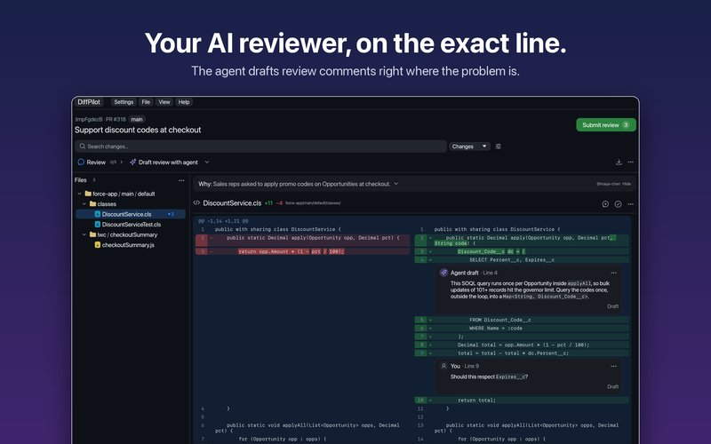
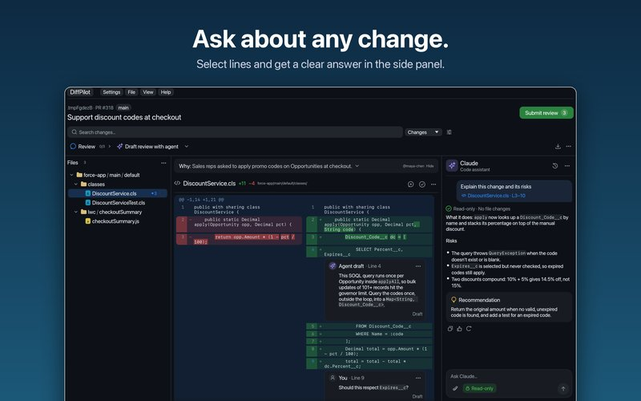
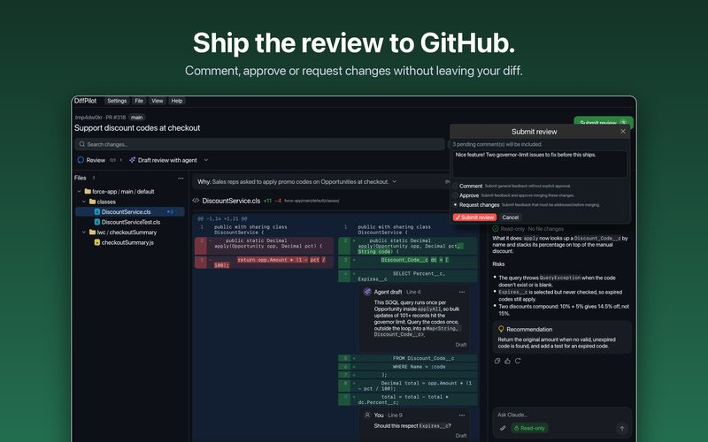
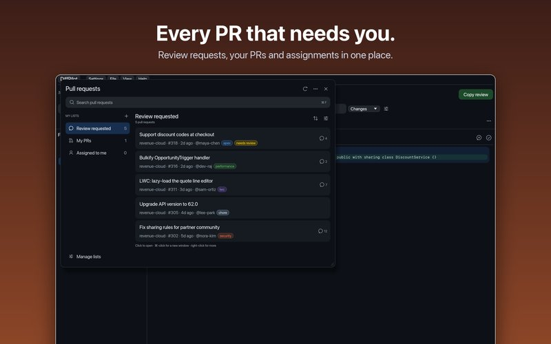
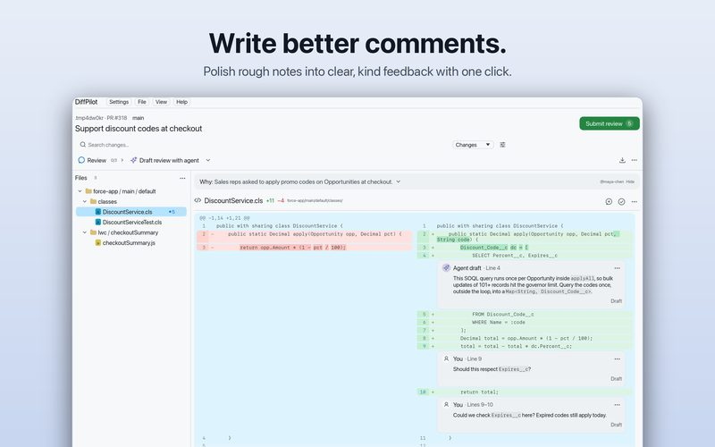
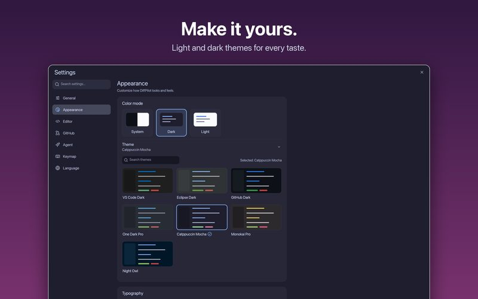
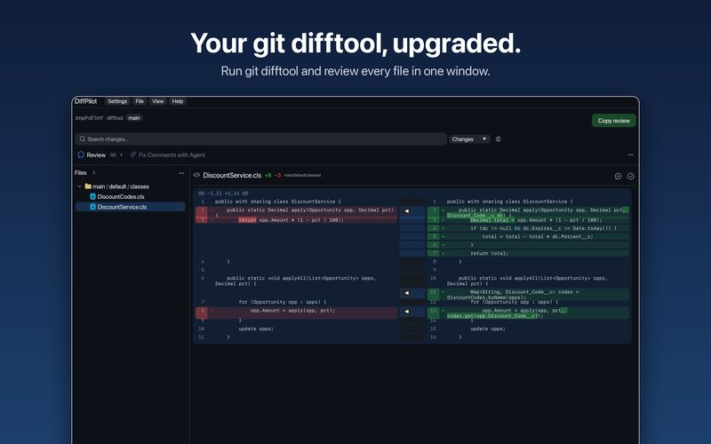
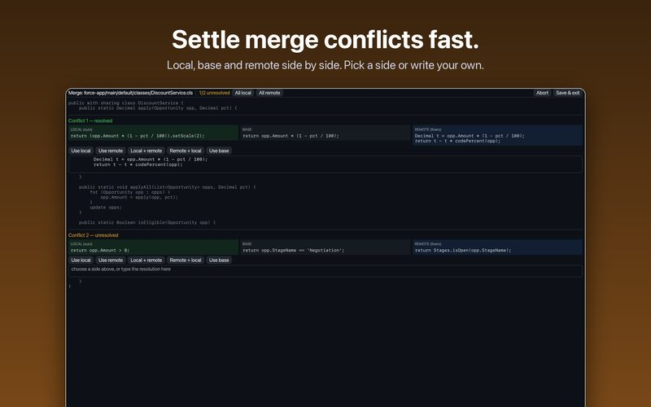
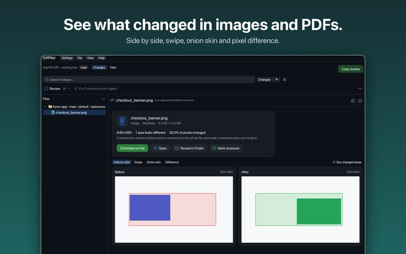
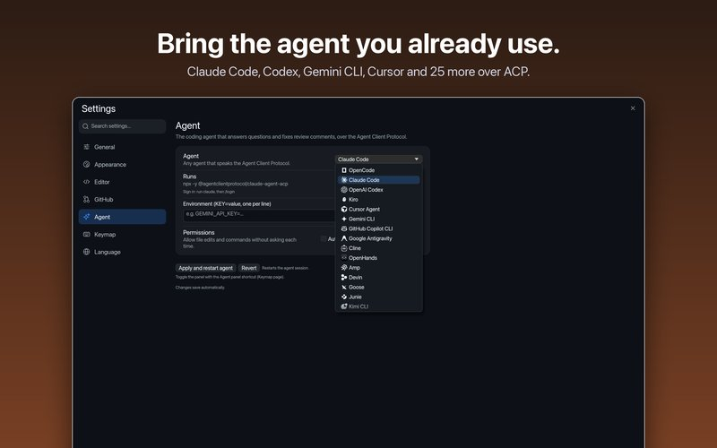

Everything needed to publish DiffPilot
Copy these fields straight into App Store Connect. Counters show each field against Apple's limit.
Store listing
DiffPilot: Git Diff & Review
Code review for you and agents
Review local changes and GitHub pull requests in a native Mac app. Use it as git difftool and mergetool, and send every comment to your coding agent in one step.
git,diff,code review,difftool,mergetool,merge conflict,pull request,github,compare,patch,agent,ai
Description and release notes
DiffPilot is a fast, native diff and code review app for Mac. Open any repository, read every change side by side, leave comments on the lines that matter, and hand the whole review to your coding agent to fix.
REVIEW LOCAL CHANGES
• See staged and unstaged changes the moment you open a repository
• Split or unified view with syntax highlighting
• Mark files reviewed and move through them with J and K
• Comments that no longer match the code are flagged as outdated
REVIEW GITHUB PULL REQUESTS
• Open any pull request by number, link or branch
• Existing PR comments appear next to the code
• Submit your review as Comment, Approve or Request changes
• See PRs that need your review, PRs you opened and PRs assigned to you
WORK WITH YOUR CODING AGENT
• Draft a review with Claude Code, Codex, Gemini CLI, Cursor or any of 29 Agent Client Protocol agents
• Ask the agent to explain selected lines in a side panel
• Polish a rough note into clear feedback
• Send every open comment to the agent in one step and review the fix in the same window
• File writes and commands wait for your approval
GIT DIFFTOOL AND MERGETOOL
• Use DiffPilot as git difftool, with every changed file in one window
• Use DiffPilot as git mergetool and resolve each conflict with local, remote, both or base
• Conflicted files show up in the normal review with an option to resolve them with your agent
COMPARE ANYTHING
• Compare two files or two folders, with or without Git
• Copy blocks between two files in a two pane editor
• Compare images side by side, with a swipe, onion skin or difference view
• Compare PDFs page by page
• Read a diff from standard input
COMMAND LINE
Run dip in any repository:
dip review uncommitted changes
dip --staged review what you will commit
dip main..feature review a branch
dip --pr 318 review a pull request
dip --compare a b compare two files or folders
PRIVATE BY DESIGN
DiffPilot collects no data. There are no accounts, analytics or tracking. Your comments and settings stay on your Mac.
Light and dark themes, a configurable keymap, and 15 languages.
Requires Git. Pull request features use the GitHub CLI. Agent features need a supported coding agent installed separately.
This is the first release of DiffPilot.
• Review local Git changes and GitHub pull requests side by side
• Use DiffPilot as git difftool and git mergetool
• Draft reviews and fix comments with your coding agent
• Compare files, folders, images and PDFs
• Light and dark themes in 15 languages
Screenshots
Ten Mac screenshots at 2880 × 1800, an accepted App Store size for Mac. Upload them in this order. Click a screenshot to download the PNG.


1. Agent drafts a review · 2880 × 1800 PNG

2. Ask the agent about a change · 2880 × 1800 PNG

3. Submit a GitHub review · 2880 × 1800 PNG

4. Pull request list · 2880 × 1800 PNG

5. Light theme · 2880 × 1800 PNG

6. Themes · 2880 × 1800 PNG

7. git difftool · 2880 × 1800 PNG

8. git mergetool · 2880 × 1800 PNG

9. Image compare · 2880 × 1800 PNG

10. Coding agents · 2880 × 1800 PNGAlso available: the app icon (512 × 512 PNG) and the social preview image (1200 × 630).


App information
| Bundle ID | com.diffpilot.dip |
| Version | 0.1.4 |
| Platform | macOS 11 or later, Apple silicon and Intel |
| Primary category | Developer Tools |
| Secondary category | Productivity |
| Price | Free, in all 175 countries and regions |
| Age rating | 4+ (no objectionable content in any questionnaire category) |
| Copyright | 2026 DiffPilot |
| Languages | English, Japanese, Spanish, French, German, Dutch, Simplified Chinese, Traditional Chinese, Korean, Portuguese (Brazil), Italian, Russian, Arabic, Hindi, Tamil |
URLs
| Marketing URL | https://tzutalin.github.io/DiffPilot/ |
| Support URL | https://tzutalin.github.io/DiffPilot/support.html |
| Privacy policy URL | https://tzutalin.github.io/DiffPilot/privacy.html |
| Terms (EULA) | Apple standard EULA, plus terms.html |
| Bug reports | github.com/tzutalin/DiffPilot/issues |
Privacy and compliance answers
| App privacy: data collection | Data Not Collected. Answer No to “Do you or your third party partners collect data from this app?” |
| Tracking | No. The app does not track users and needs no App Tracking Transparency prompt. |
| Export compliance | The app uses no encryption of its own beyond what macOS provides. Set ITSAppUsesNonExemptEncryption to NO in Info.plist. |
| Sign in for review | Not required. No demo account needed. |
| Content rights | The app shows only the user's own files. It contains no third party content. |
| Advertising identifier | Not used. |
Notes for App Review
DiffPilot is a developer tool that shows differences between files, folders and Git revisions, and lets you leave review comments on changed lines.
No account or sign in is needed. To test without any setup:
1. Open DiffPilot and skip the setup screens.
2. Drag a folder or a text file onto the DiffPilot icon in the Dock, or choose File > Open Folder. The App Store build only reads files you pick this way.
3. Click a line number to add a comment. Press R to mark a file reviewed.
Git and pull request features run the git and gh command line tools that the user installs. Agent features run a coding agent such as Claude Code that the user installs and signs in to. All of these are optional. Inside the App Sandbox these tools may not start. The file and folder views in steps 2 and 3 do not need them.
The app collects no data and makes no network requests of its own.
Release checklist
- Create the app record in App Store Connect with bundle ID
com.diffpilot.dip. - Fill in the listing, URLs, category, age rating and privacy answers from this page.
- Build a universal binary, sign it with a Mac App Store distribution certificate, and upload it with Xcode or Transporter.
- Confirm the build runs under the App Sandbox. The sandbox stops DiffPilot from starting
git,ghand agents, so the App Store build is a file and folder viewer first. Keep the notarized GitHub release and Homebrew cask as the full Git edition, and keep the review notes above accurate about this. - Upload the ten screenshots in order.
- The site links to the App Store record
id6834689259. Remove the "in App Store review" note on the home page once the app is live. - Submit for review.